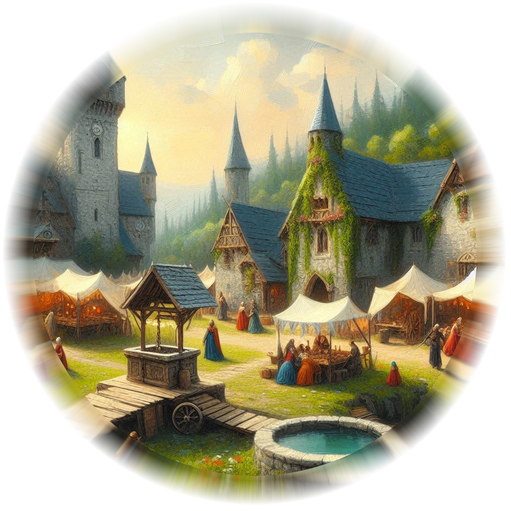
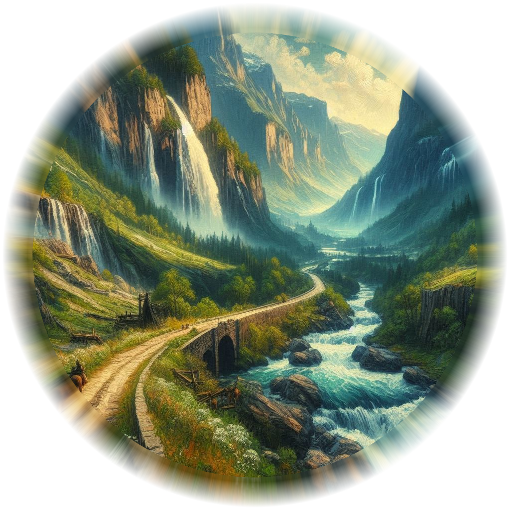
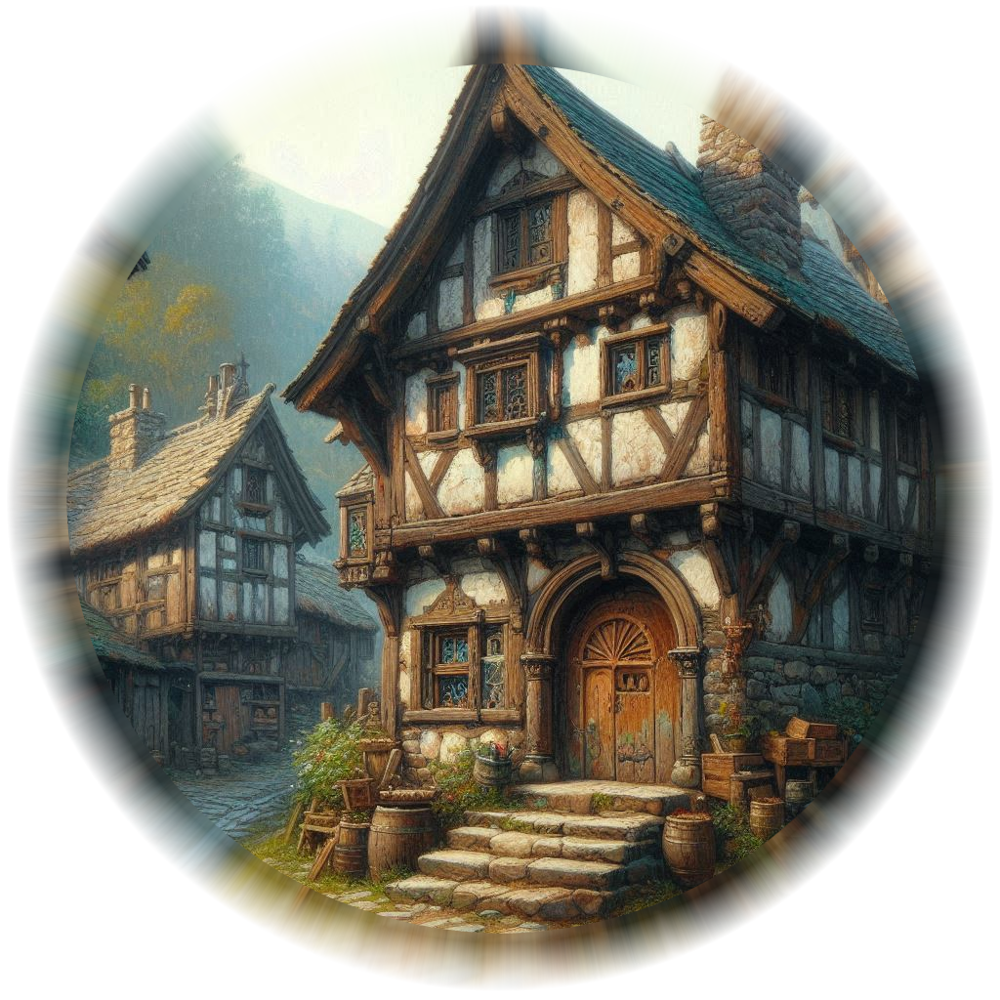
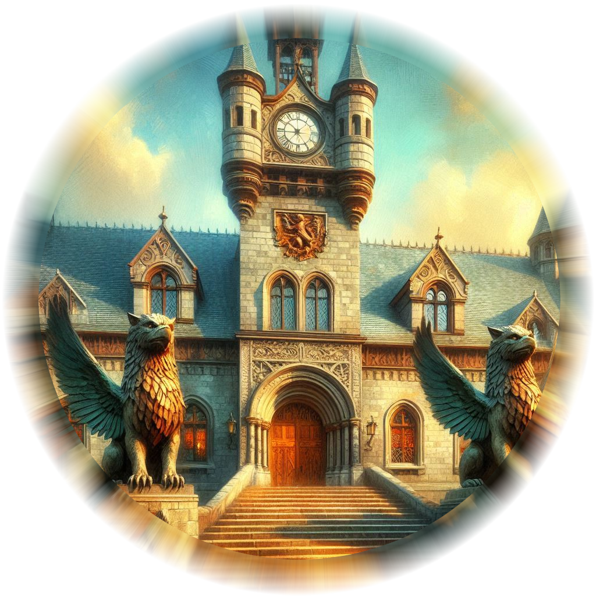
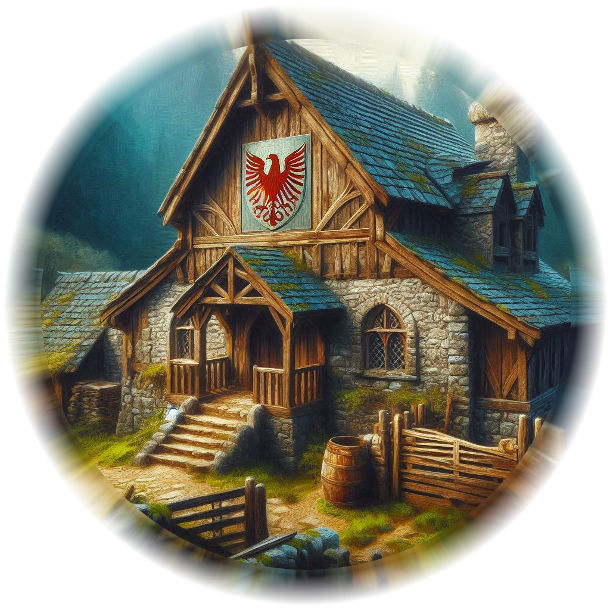
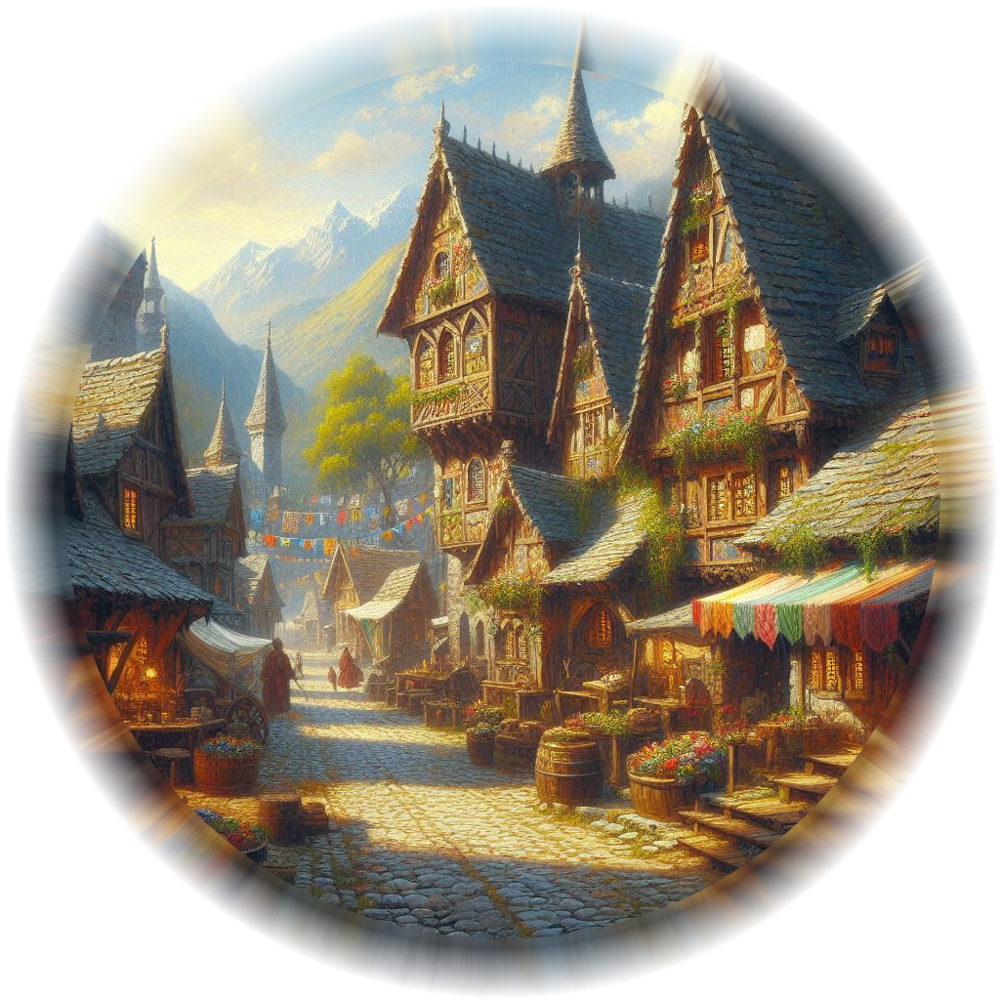
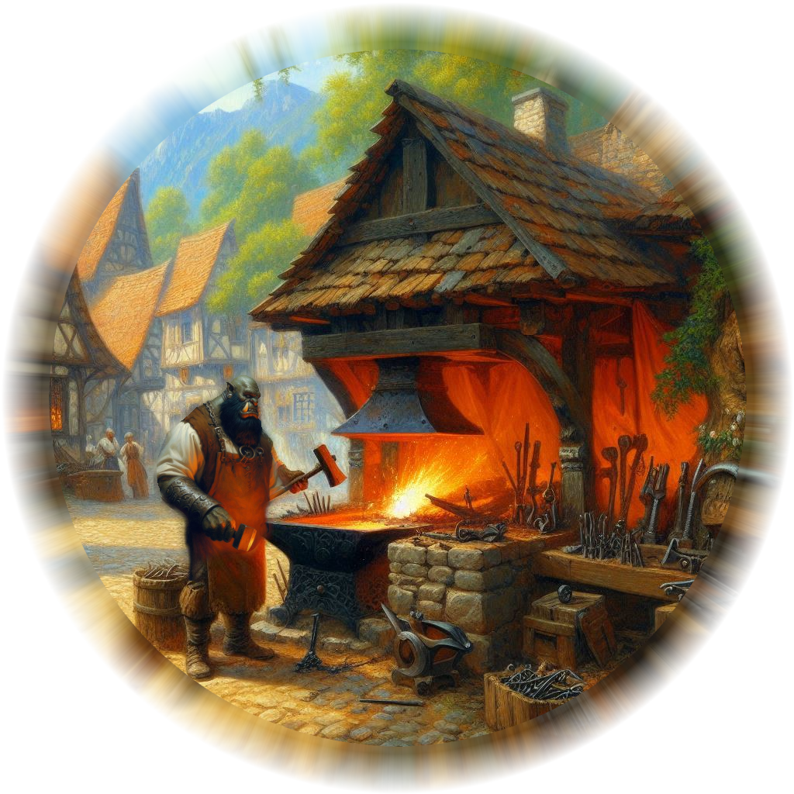
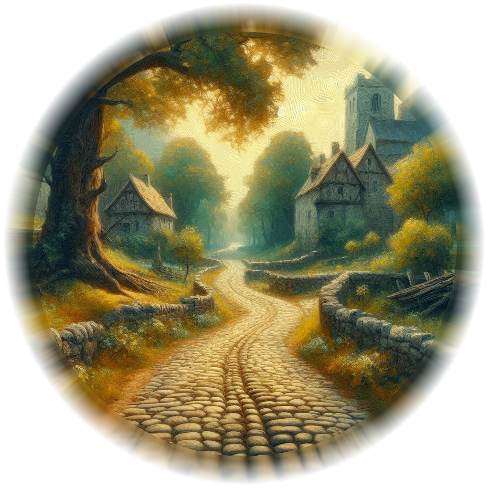
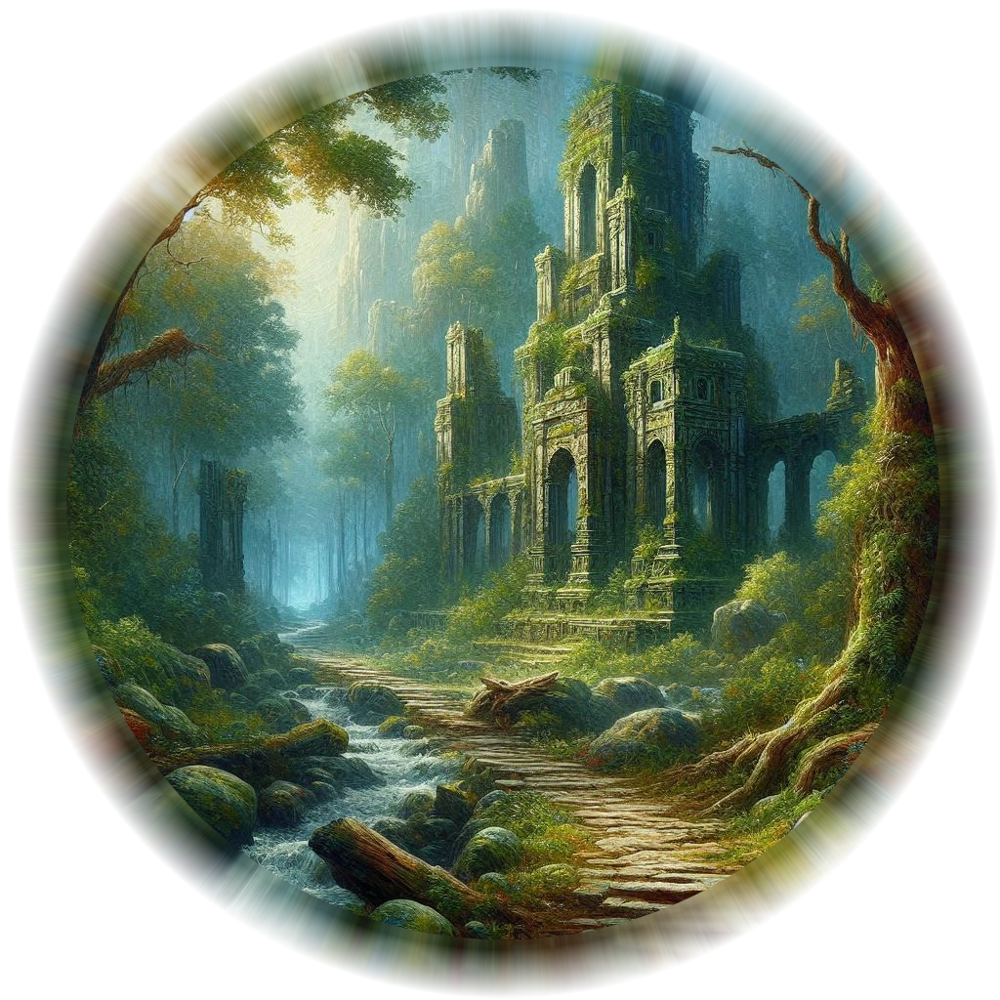

☰
Home
Map
History & NPCs
Store
Download the eBook

Town Square

North Road to Hemlock

Apothecary & Dorms

Magistrate

Ranger's Guild

Wyrmblood Flask

Baider's Smithy

West Road to Hawthorn

East Road to Moonspire
Apothecary to Hemlock...12 Hours by Foot
Blacksmith to Hemlock...12 Hours by Foot
Town Square to Hemlock...12 Hours by Foot
Town Square to Apothecary...5 Minutes by Foot
Town Square to Blacksmith...10 Minutes by Foot
Town Square to Magistrates...10 Minutes by Foot
Town Square to Wyrmblood Flask...5 Minutes by Foot
Town Square to Rangers Guild...30 Minutes by Foot
Ranger's Guild to Magistrates...20 Minutes by Foot
Ranger's Guild to Wyrmblood Flask...25 Minutes by Foot
Apothecary to Magistrates...15 Minutes by Foot
Blacksmith to Wyrmblood Flask...15 Minutes by Foot
×
Location Title
Brief description for players...
GM Info